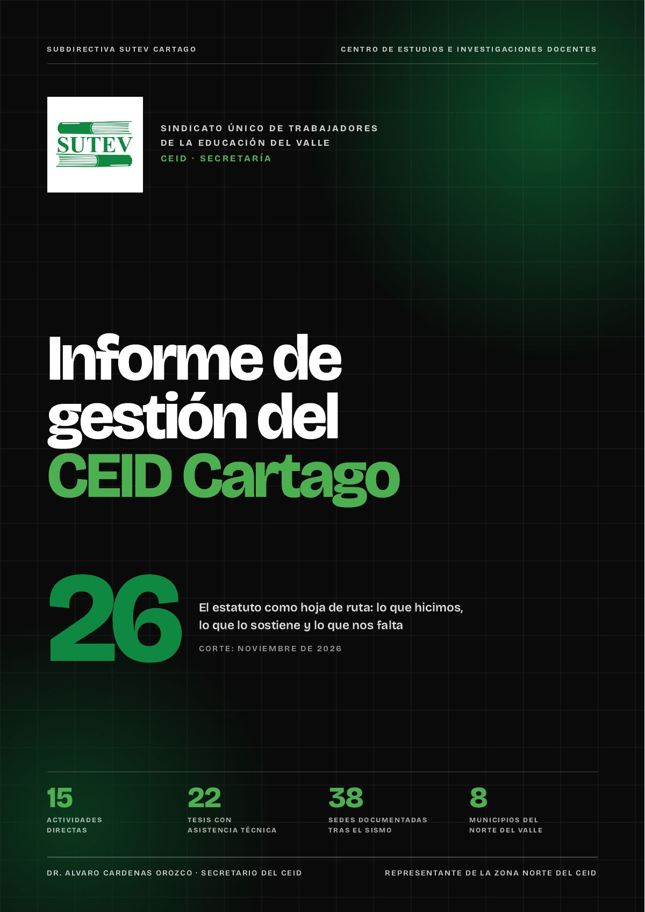

Informe
Informe de gestión del CEID Cartago 2026
El estatuto como hoja de ruta: 15 actividades directas, 16 indirectas, lo que falta y la evaluación del año.

El informe de gestión 2026 toma el estatuto como hoja de ruta y da cuenta de lo que hizo la secretaría del CEID Cartago.
Lo que reúne
- 15 actividades directas en cinco frentes: formación continua del magisterio; investigación y publicación docente; servicios y herramientas para el docente; defensa de la educación pública, y organización sindical y rendición de cuentas.
- 16 actividades indirectas que respaldan la gestión.
- Lo que sigue en curso y lo que está por mejorar.